Jag läser min sista termin till civilingenjör i Design och Produktutveckling på Linköpings universitet med masterinriktning teknisk design. I den här portfolion finns information och bilder från några projekt jag genomfört.
Autodesk FusionBlenderClaude CodeCreoFigmaGITIllustratorPythonUnreal EngineVisual Studio Code
Appdesign
HT24KursnamnGrupparbete
Det här projektet handlade om att utveckla och utvärdera en interaktiv
prototyp av en app i Figma. I appen skulle användare av en delningstjänst
kunna boka och hyra ut föremål, som exempelvis verktyg, till varandra. User
storys och storymapping användes för att skapa en low-fidelity prototyp.
Denna låg till grund för en high-fidelity prototyp som utvärderades med
hjälp av användartester. Bilderna visar hur startsidan, tids- och
platsbokning samt leverans av verktyg ser ut i appen.
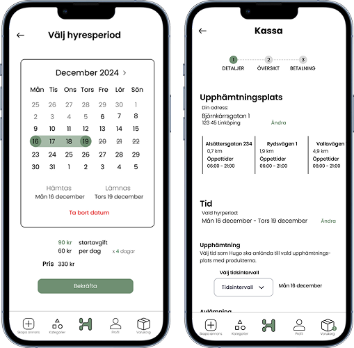
Hallbänk med avfallssortering
HT24KursnamnGrupparbete
Sorteringsbänken är en hallbänk med inbyggd, dold avfallssortering. Bänken
är designad för att vara både en praktisk möbel och en lösning för att
förvara och sortera avfall. Bänken har tre löstagbara hinkar som rymmer ca
20 liter var. Hinkarna kan plockas ur bänken och transporteras var och en
för sig om endast en hink är full. Vid behov kan alla hinkar lyftas ur
samtidigt med hjälp av en ram med handtag. Hinkramen gör det möjligt att
bära alla hinkar i en hand, vilket underlättar transporten av
färdigsorterade sopor till soprum eller återvinningsstation.
Kandidatarbete produktutveckling
VT24KursnamnGrupparbete
Mitt kandidatarbete fokuserade på hur olika sammanfogningsmetoder påverkar
möjligheten att upcycla stolar. Tre stolar demonterades för att identifiera
vilka typer av sammanfogningar som använts och vilka utmaningar dessa
innebär för återbruk. Alternativa sammanfogningsmetoder föreslogs för att
stolarna enklare skulle kunna upcyclas. De nya sammanfogningsmetoderna
skulle möjliggöra enkel demontering för att fler delar skulle kunna
återanvändas, vilket bidrar till en mer hållbar och resurssnål designprocess.
Bilderna nedan visar en av de nedmonterade stolarna som monterades ihop igen
med de föreslagna reversibla sammanfogningsmetoderna.
Material för design
HT23KursnamnGrupparbete
Detta projekt handlade om att kombinera olika material i en produkt som kan
kopplas till begreppet tid. Projektet resulterade i en bordslampa med
mekanisk ljusreglering. Ljusupplevelsen och formen kan regleras genom att
ändra position på två trattar som är placerade i botten och toppen av
lampskärmen. Trattarnas position avgör hur mycket ljus som släpps ut och
reflekteras. Detta gör att lampan kan anpassas efter tid på dygnet eller året.
Lampan är gjord i stål och björkfaner.
Plywoodpall
HT24KursnamnGrupparbete
I det här projektet fick vi i uppgift att designa och tillverka en pall i
materialet plywood. Vi gjorde prototyper av sitsen i blåskum för att testa
olika sittstorlekar. Både sitsen och benen är tillverkade av ihoplimmade
plywoodskivor i en CNC-fräs. Pallens ben består av två bågformade delar som
sammanfogats med en halv-i-halv-fog. Sitsen har fyra rampamuffar som benen
är fästa i med skruvar för att pallen ska vara stabil. Pallen är oljad med
en mörkare hårdvaxolja.
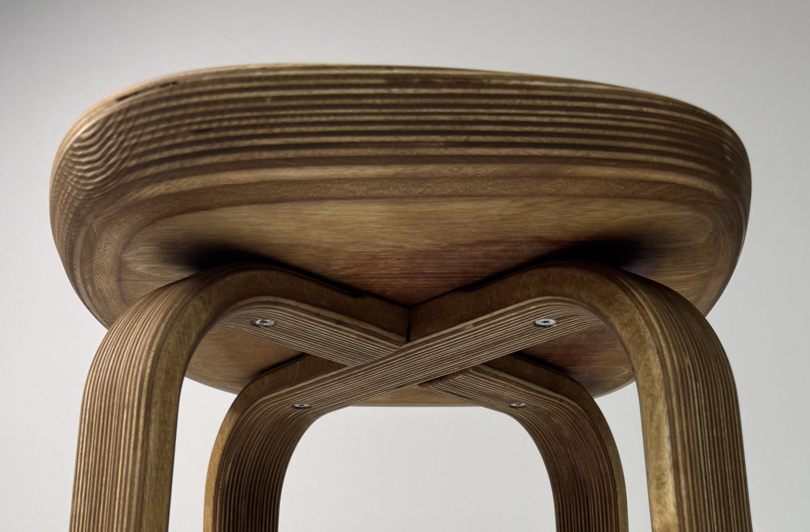
Produktvisualisering
HT22KursnamnEnskilt arbete
Det här projektet handlade om att göra en nydesign av en befintlig produkt.
Mitt arbete har utgått från en analog väckarklocka. Bilderna nedan visar
ideskisser, processen av att tillverka en lermodell av det valda konceptet,
den färdiga lermodellen och handgjorda skisser av den färdiga produkten.


 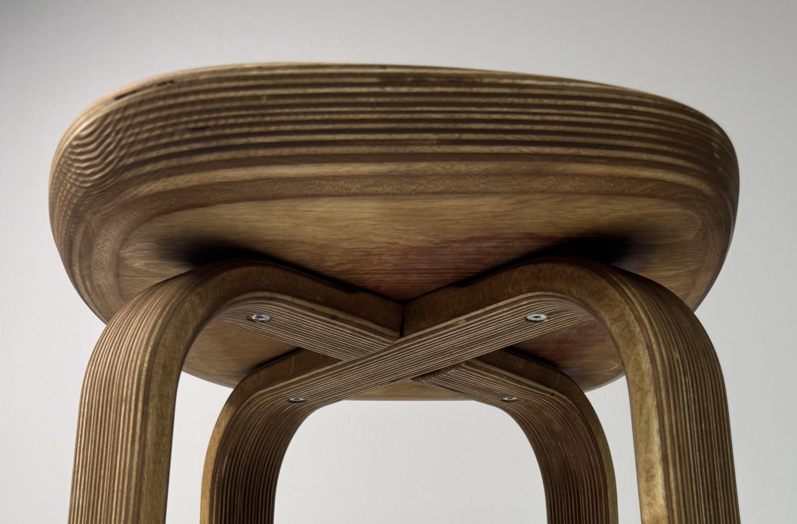
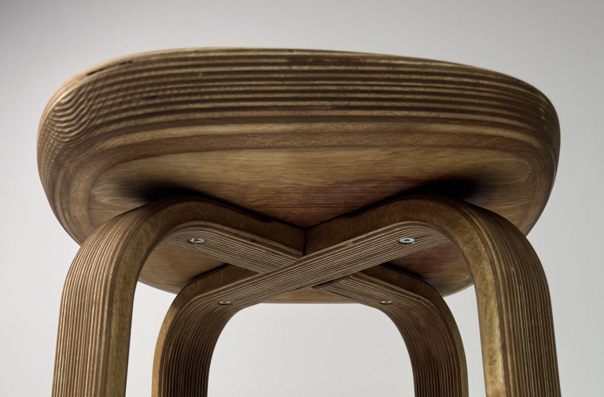


 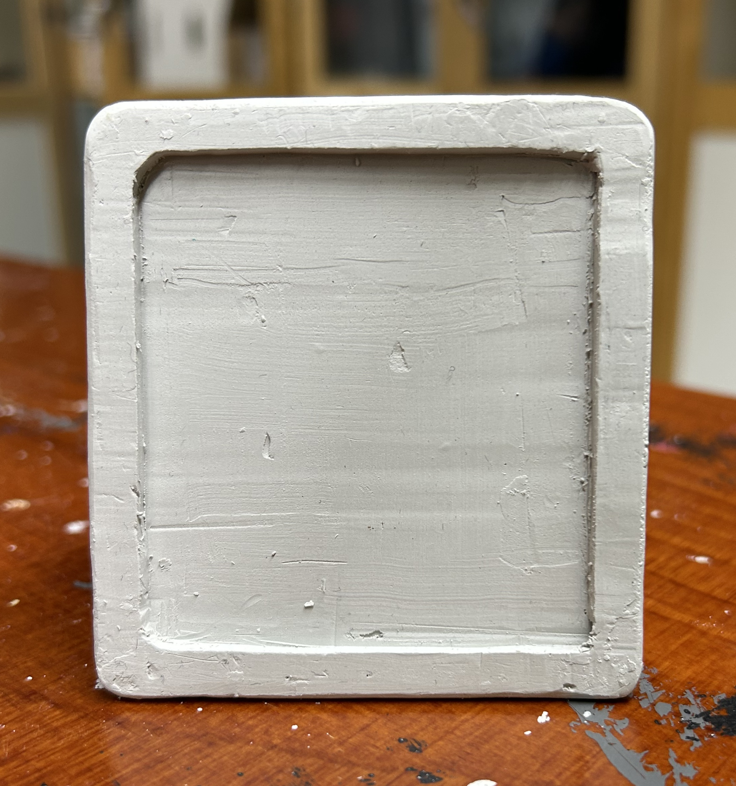
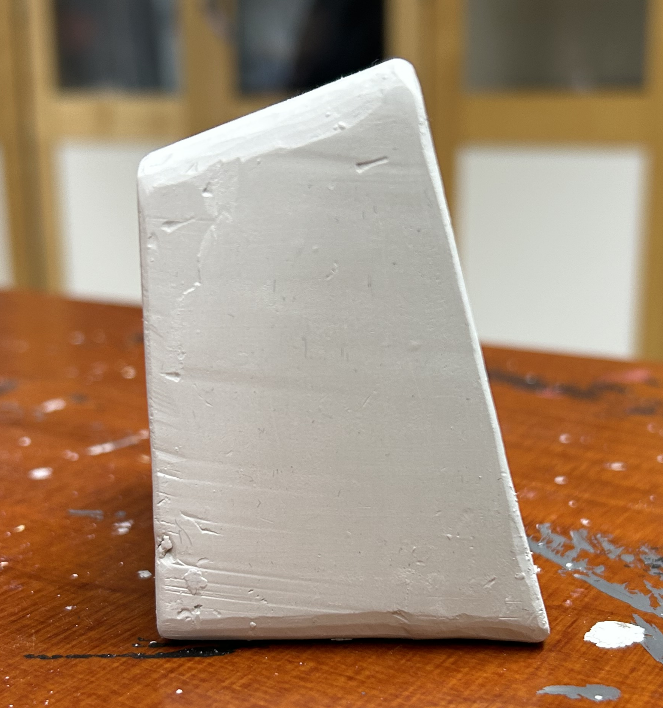
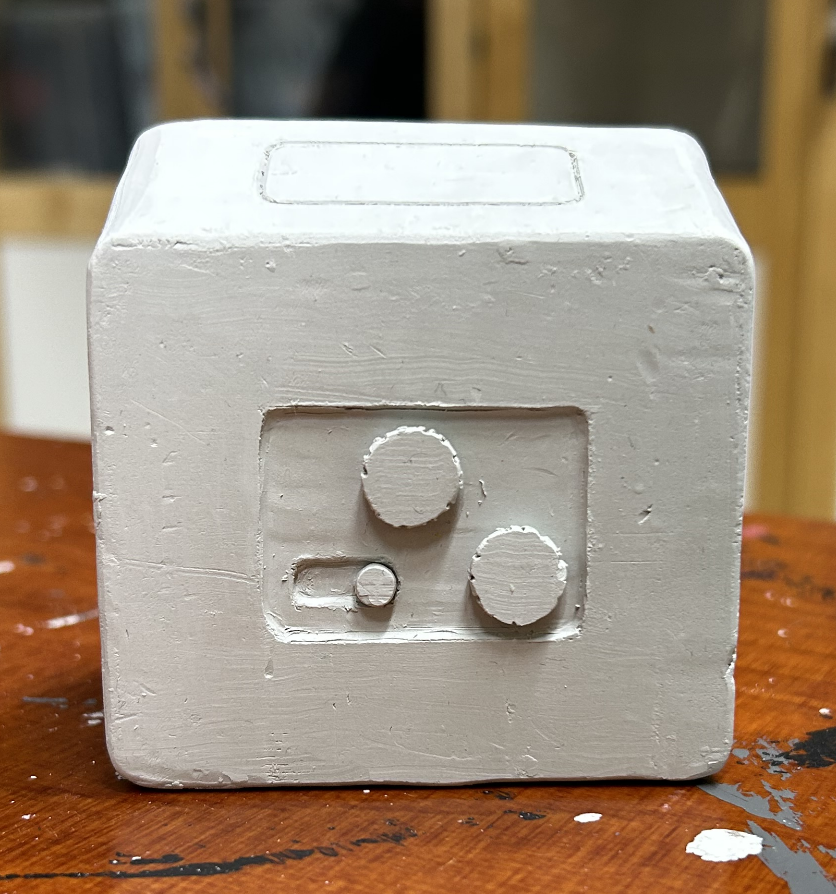
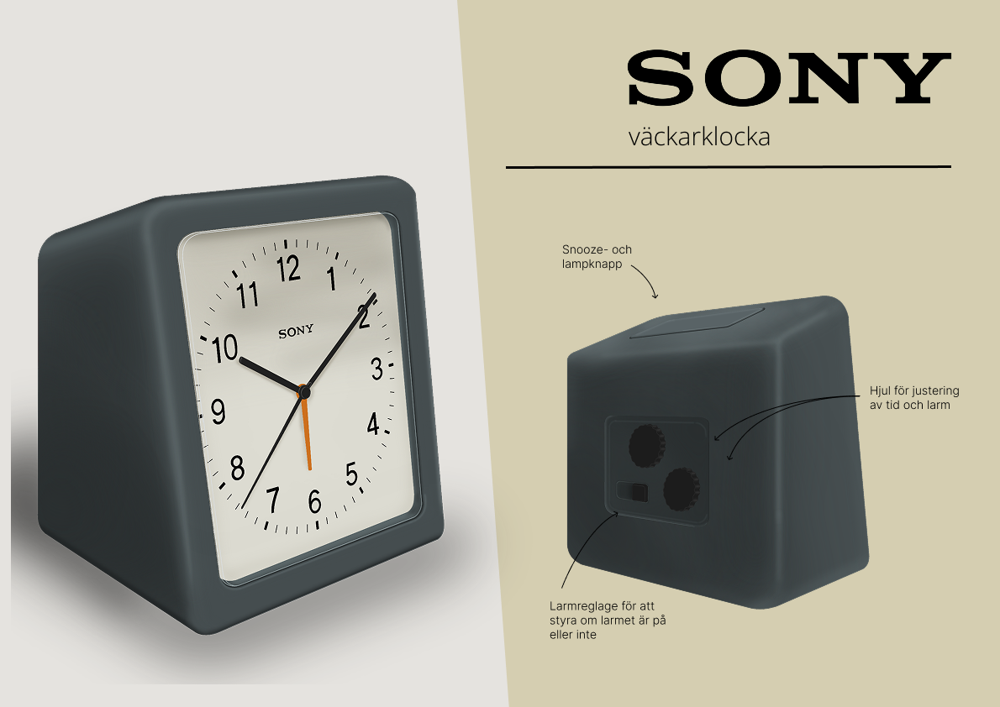
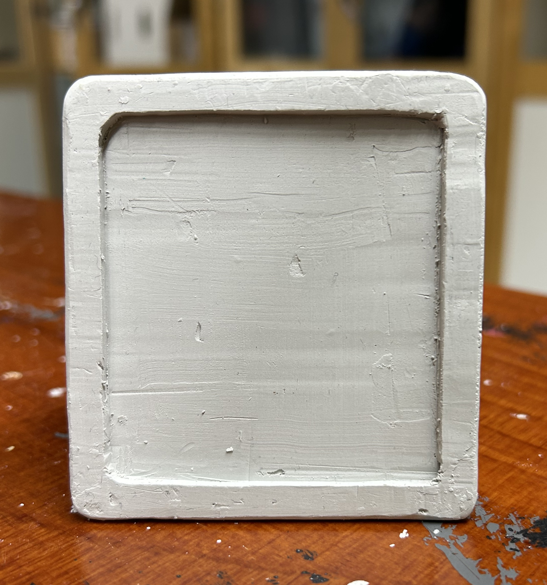
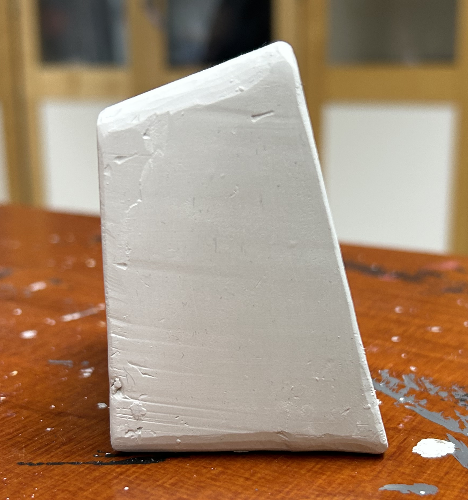
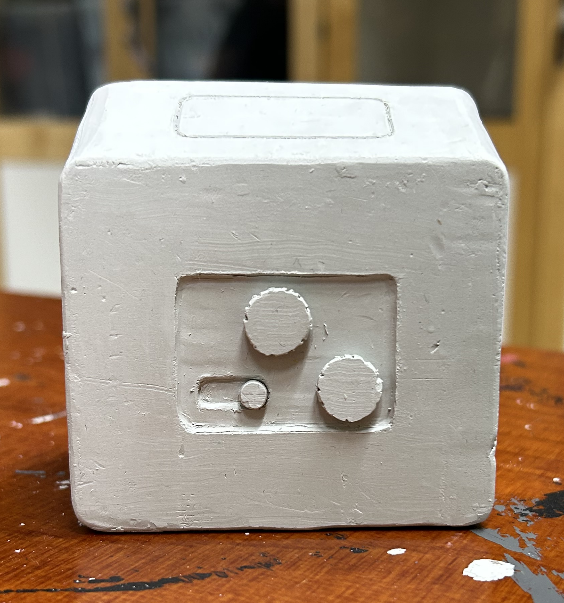
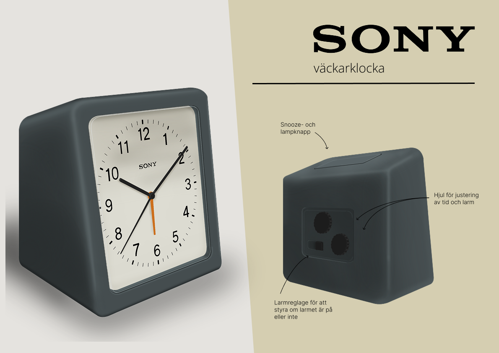